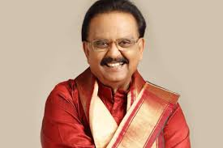

S. P. Balasubramanyam
Sripathi Panditaradhyula Balasubrahmanyam (4 June 1946 – 25 September 2020)
Indian Musician and Guinness world record for highest number of songs over 40,000

- He won six National Film Awards for Best Male Playback Singer for his works in four different languages; Telugu, Tamil, Kannada, and Hindi; 25 Andhra Pradesh state Nandi Awards for his work in Telugu cinema, and numerous other state awards from Karnataka and Tamil Nadu.
- In addition, he won the Filmfare Award, and six Filmfare Awards South. According to some sources, he held the Guinness World Record for recording the highest number of songs by a singer with over 40,000 songs
- He recorded 21 songs in Kannada for the composer Upendra Kumar in Bengaluru from 9 am to 9 pm on 8 February 1981.
- In addition, he recorded 19 songs in Tamil and 16 songs in Hindi in a day, which has also been called a record.
- In 2012, he received the state NTR National Award for his contributions to Indian cinema.
- In 2016, he was honoured with the Silver Peacock Medal as Indian Film Personality of the Year.
- He was a recipient of the Padma Shri (2001) and Padma Bhushan (2011) from the Government of India
Early life and background

- S. P. Balasubrahmanyam was born in Nellore, Madras Presidency (present-day Andhra Pradesh) into a Telugu Brahmin family.His father, S. P. Sambamurthy, was a Harikatha artist who also acted in plays.His mother was Sakunthalamma, who died on 4 February 2019.
- He had two brothers and five sisters, including singer S. P. Sailaja.His son S. P. Charan is also a popular South Indian singer, actor and producer.
- Balasubrahmanyam developed an interest in music at an early age, studied musical notations, and learned music.
- He enrolled at the JNTU College of Engineering Anantapur with the intention of becoming an engineer. He discontinued his studies early due to typhoid and joined as an associate member the Institution of Engineers, Chennai.
- Balasubrahmanyam continued to pursue music during his engineering studies and won awards at singing competitions. In 1964, he won the first prize in a music competition for amateur singers organized by the Madras-based Telugu Cultural Organization. He was the leader of a light music troupe composed of Anirutta (on the harmonium), Ilaiyaraaja (on guitar and later on harmonium), Baskar (on percussion) and Gangai Amaran (on guitar).
- He was selected as the best singer in a singing competition which was judged by S. P. Kodandapani and Ghantasala.Often visiting music composers seeking opportunities, his first audition song was "Nilave Ennidam Nerungadhe".
- It was rendered by veteran playback singer P. B. Srinivas, who used to write and give him multi-lingual verses in Telugu, Tamil, Hindi, Kannada, Malayalam, Sanskrit, English and Urdu.
Visit SPB Wikipedia For more Information